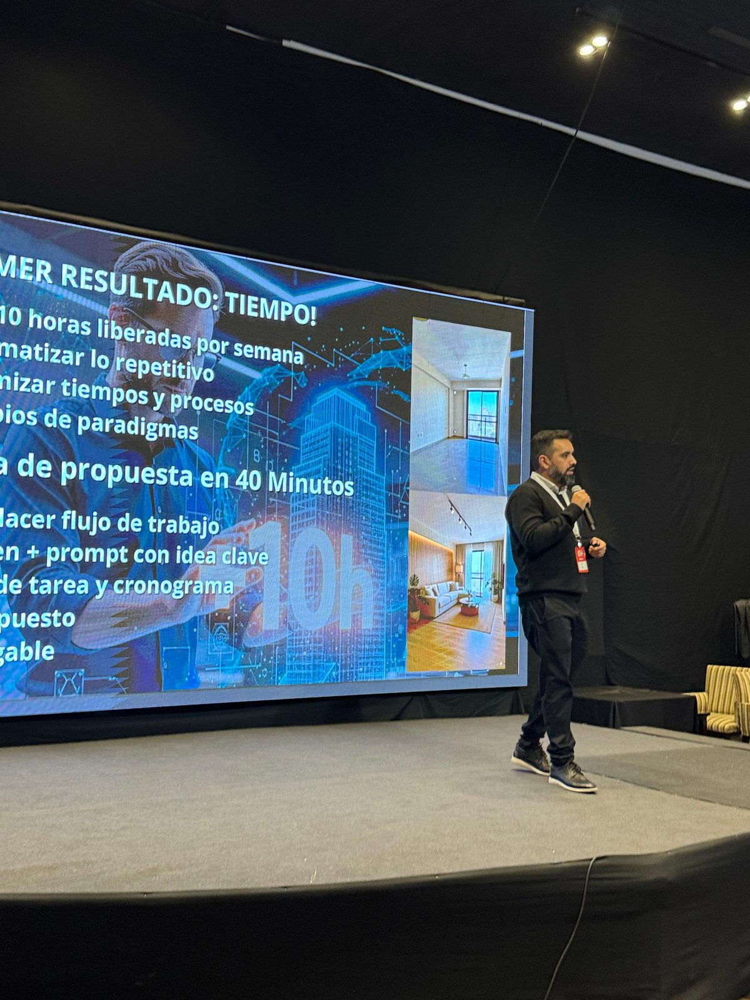

Video clase · 11 min
Cómo crear tu primera Skill con Claude
En once minutos construís una skill que automatiza una tarea repetitiva de tu estudio. La clase entera, sin recorte ni registro previo.
Ver clase gratisCon IA, el límite es tu imaginación.
Automatizá. Presentá. Ganás proyectos.
Cuatro casos reales del programa. Elegí uno para ver el antes, el después y la pieza que quedó funcionando.
Calcular honorarios: proceso manual, tedioso, con margen de error.
Tu propia app que calcula honorarios al instante.
Santiago creó su propia app de honorarios con IA en una sola sesión.
Presupuestar fundaciones: días de cómputos manuales.
Presupuesto de estructura preciso y automático en minutos.
Presupuesto de estructura de fundaciones calculado con IA. Preciso, sin errores.
Sin presencia digital, dependiendo de recomendaciones de boca en boca.
Web del estudio creada en horas, sin escribir una línea de código.
Su web profesional, construida con IA en pocas horas. Sin programar.
Renders sin control del proceso: dependés del resultado que devuelve la IA.
Renders de forma controlada y eficaz, auditables, explicables.
Eugenia muestra cómo mantener el control total del proceso de render con IA.
Abrí un caso para ver los objetivos con los que arrancó, lo que logró y la pieza que quedó funcionando.
Sus objetivos cuando arrancó
Lo que consiguió
"El curso de Leo apunta directo a lo que necesitaba. Su acompañamiento fue claro, práctico y muy útil. Lo recomiendo al 100%."
Santiago Manzanares
App calculadora de honorarios
Web profesional del estudio
Sus objetivos cuando arrancó
Lo que consiguió
Zonas por potencial, listado de propiedades y negociación asistida — sistema a medida
Estudios y empresas que ya construyen sistemas con IA
Tres piezas reales del programa, funcionando. No son demos: son las mismas skills que usan los estudios con los que trabajo.
En once minutos construís una skill que automatiza una tarea repetitiva de tu estudio. La clase entera, sin recorte ni registro previo.
Ver clase gratisScripts, ejemplos y documentación. Cargás la planilla y salen los ítems computados con materiales y mano de obra separados.
Recibir skill por emailLe pasás las fotos de la semana y devuelve el avance, los desvíos detectados y el PDF listo para mandarle al cliente o al contratista.
Recibir skill por emailHerramientas que usamos en el programa
Construimos juntos un sistema que se adapta a tu estudio o empresa, enfocado en eliminar las tareas repetitivas, tediosas y propensas a error humano. Con mi acompañamiento directo en cada encuentro.
12 encuentros · 6 semanasAccedés al aula Skool con clases grabadas y herramientas listas para usar desde el día uno. Más una comunidad exclusiva de arquitectos y empresas enfocados en optimizar sus procesos.
Acceso inmediatoCuando terminás tus 12 encuentros, el acceso no se corta. Seguís con todas las clases, recursos y actualizaciones futuras que incorpore el programa.
Sin fecha de vencimientoPróxima cohorte · Cupos limitados
Herramientas que usamos en el programa
Cada encuentro es una sesión de pantalla compartida sobre un cuello de botella real de tu producción. No mirás una clase: al final de la sesión la pieza queda funcionando y el proceso deja de depender de que alguien se acuerde de hacerlo.
El problemaPlanta y alzados que se contradicen y nadie lo ve hasta que el plano ya salió a obra.
Lo que hicimosConectamos Revit al modelo por MCP. La IA lee la planta, la cruza contra los cuatro alzados y devuelve la tabla de incoherencias de cota — alféizares, dinteles, cabeceras — con la causa de cada una.
Estudio de arquitecturaEl problemaUna empresa de materiales de construcción que llevaba órdenes, lotes y envíos en planillas sueltas: sin trazabilidad y con la misma carga hecha dos veces.
Lo que hicimosArmamos en sesión la app que hoy usa el equipo: alta de órdenes, control de stock y trazabilidad por lote en un solo lugar, con la etiqueta que se imprime desde la misma pantalla.
Empresa de materiales de construcciónDatos del cliente desenfocados a pedido.

Soy Leo Díaz, Científico de Datos y Machine Learning Engineer. Un edificio y un sistema de trabajo se levantan igual: hay que entender el terreno, resolver la estructura y que después se sostenga solo. Yo construyo la segunda parte — los sistemas que hacen que un proceso deje de depender de que alguien se acuerde de hacerlo.
Por eso no empiezo por la herramienta de moda. Empiezo por dónde se te va el tiempo: el presupuesto que rehacés tres veces, la documentación que se contradice entre planta y alzado, el reporte de obra que armás a mano un domingo. Eso es lo que se automatiza, y eso es lo que medimos.
Lo que es criterio de proyecto queda bajo tu criterio. La IA no decide qué solución sirve para este cliente y este terreno — se ocupa de lo repetitivo para que vos tengas el tiempo de decidirlo.
No vengo a enseñarte herramientas: vengo a resolver tus dudas y a dejarte armado el sistema que tu estudio va a usar todos los días. Estos son los cuatro hábitos con los que trabajamos.
Antes de tocar una herramienta ponemos en claro qué te está costando tiempo, con qué datos contás y bajo qué restricciones trabajás — normativa, presupuesto, plazos. Sin eso, la IA devuelve cualquier cosa con mucha seguridad.
La IA propone, vos decidís. Lo que hace que una solución sirva para este cliente y este terreno es criterio de proyecto, y ese trabajo no se delega. Te saco de encima lo repetitivo, nunca las decisiones.
Los números se ejecutan, no se interpretan. Vas a saber contrastar cada resultado contra la fuente: si no podés explicar de dónde salió un dato, ese dato no entra al proyecto ni sale a obra.
Lo que funciona una vez lo dejamos como proceso repetible — una skill, una plantilla, un flujo documentado — para que lo use tu estudio entero y no dependa de que estés vos ese día.
Avanza solo · pasá el mouse para pausartocá un paso para verlo Abrí cada paso haciendo clic en su título
Tres fases, una sesión individual. Salimos con tu cuello de botella identificado y un plan que podés ejecutar. Elegí una fase para verla en detalle.
Sesión individual · Previo pago · Cupos limitados
Programas a medida para transformar equipos completos, no personas sueltas.
Asesoramiento personalizado para implementar IA en tu estudio o empresa, con el diagnóstico hecho sobre tu operación real.
Transformación integral de 3 a 6 meses con acompañamiento continuo, hasta que el equipo entero trabaja con el sistema nuevo.
Sesiones puntuales sobre un proyecto concreto, cuando ya sabés qué querés resolver y necesitás que salga bien la primera vez.
Respuesta en 24 h · Presupuesto a medida
No. El programa está diseñado para arquitectos sin experiencia en programación. Usamos herramientas de IA que generan el código por vos — tu rol es entender el proceso y dirigirlo con criterio profesional.
Todo el programa vive en Skool: clases grabadas, encuentros en vivo, comunidad y recursos en un solo lugar. Accedés desde cualquier dispositivo, en cualquier momento.
Sí. Las clases grabadas están disponibles 24/7 y el acceso no vence. Podés avanzar a tu ritmo y volver a ver el contenido cuantas veces necesites. Los encuentros en vivo quedan grabados para quienes no pueden asistir.
Con 5 a 6 horas semanales es suficiente para seguir el ritmo del programa y practicar. Si tenés más tiempo, mejor — porque cada herramienta que implementás empieza a ahorrarte horas desde la primera semana.
El programa tiene garantía: si al finalizar no optimizás al menos 10 horas semanales de trabajo, el acceso continúa sin costo adicional hasta que lo logres. No es marketing — es un compromiso real.
Sí, y sin costo extra. La IA evoluciona rápido y el programa también. Cada vez que incorporamos nuevas herramientas o módulos, los miembros activos acceden automáticamente.
Perfectamente. Empezamos desde cero: qué es la IA, cómo funciona, y cómo aplicarla paso a paso. Lo que sí necesitás traer es tu experiencia como arquitecto — eso es lo que le da valor real a todo lo que construís con IA.
Son completamente tuyas. Las skills, apps y herramientas que construís durante el programa son tuyas para siempre. Las podés usar, modificar y compartir sin restricciones. Es tu activo profesional, no nuestro.
Estoy aquí para ayudarte a transformar tu práctica arquitectónica con IA
Te enviamos el link de descarga directamente a tu casilla.